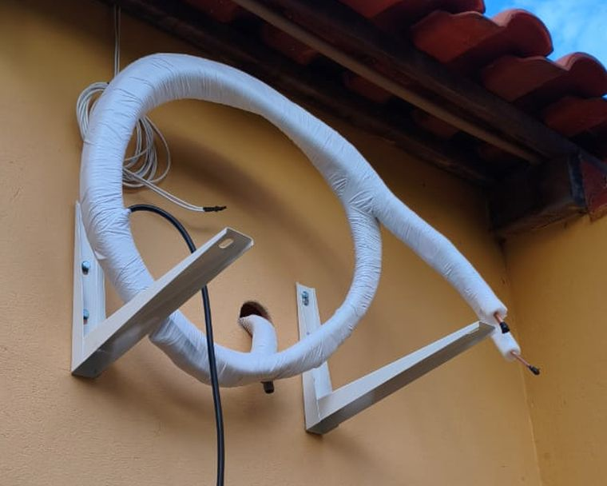
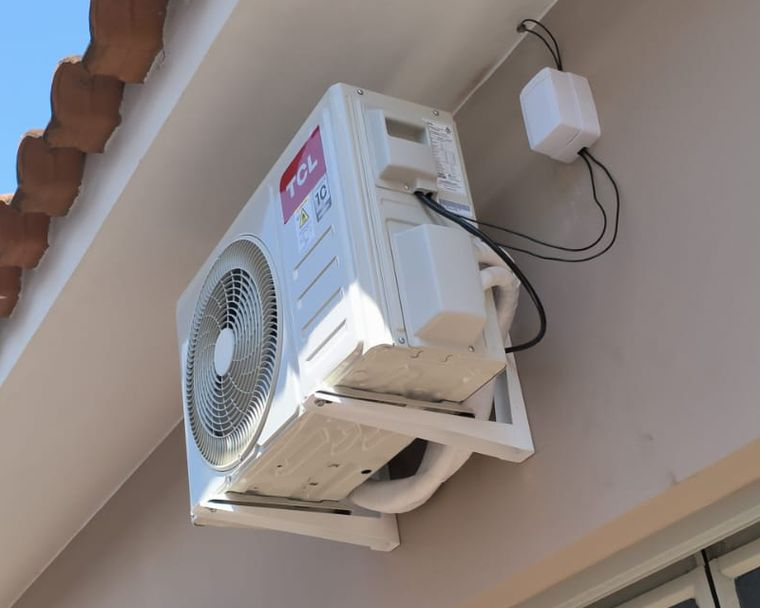
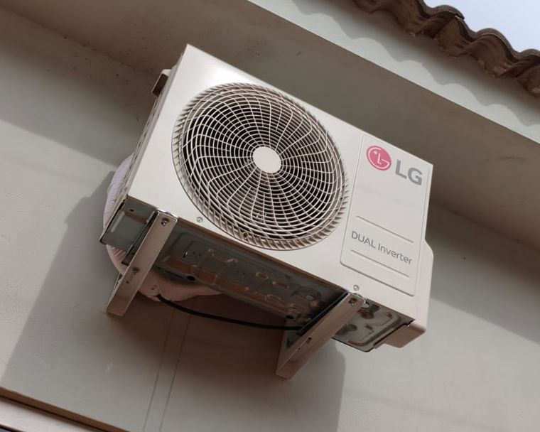
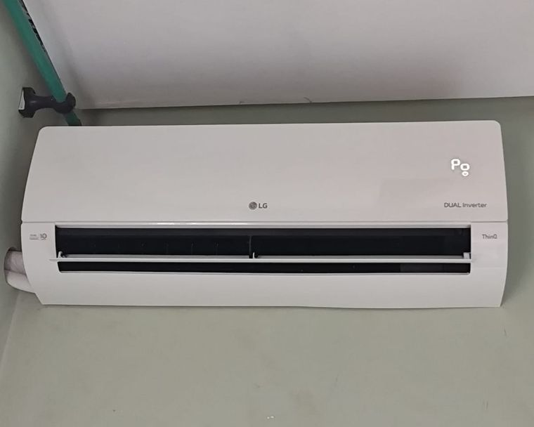
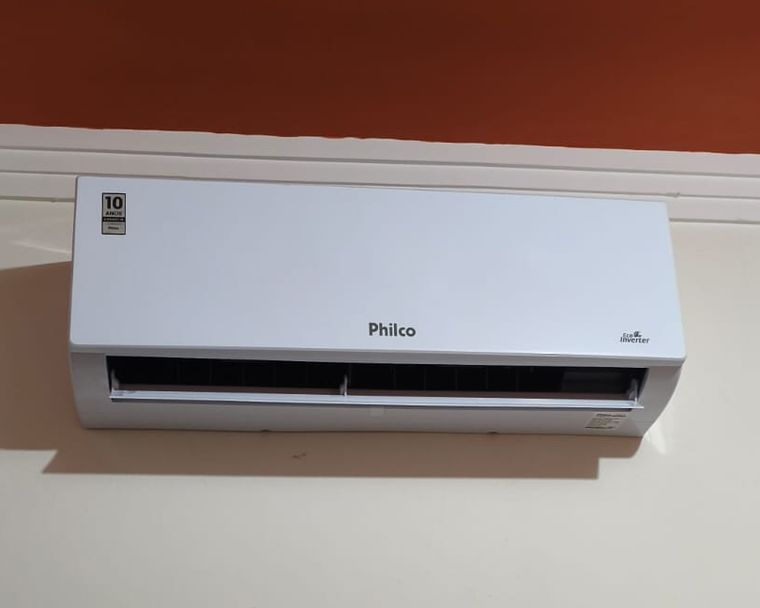
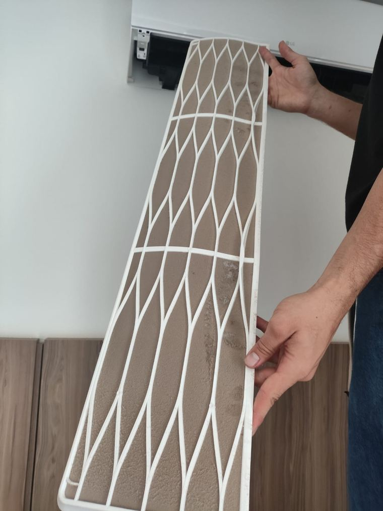
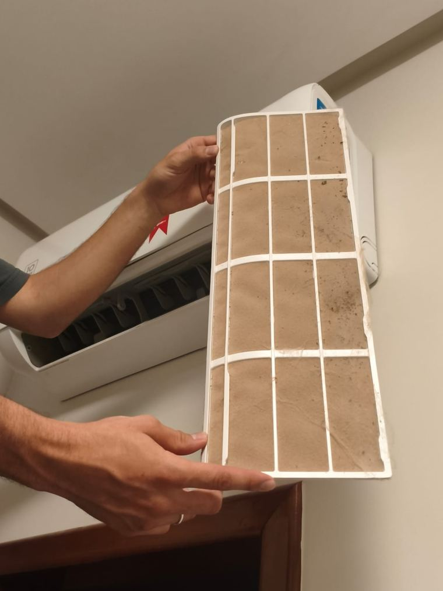
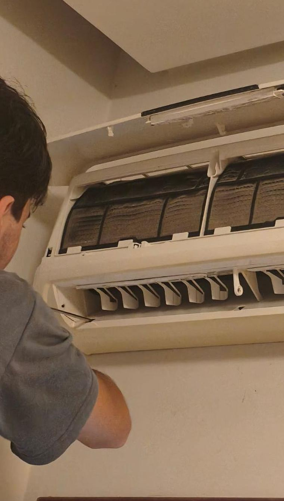
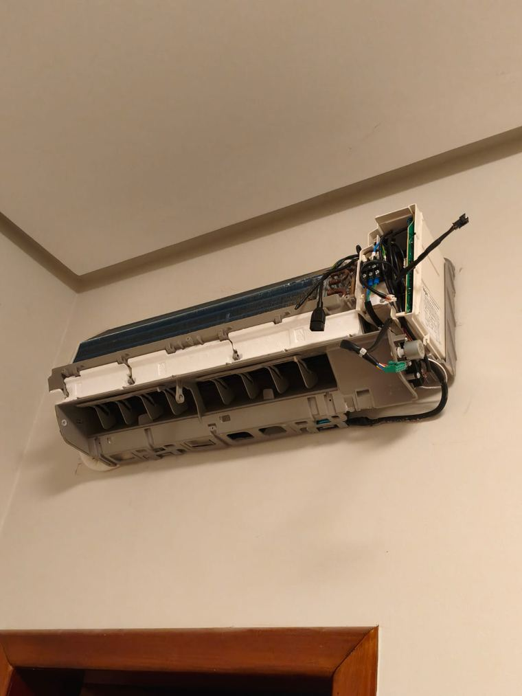
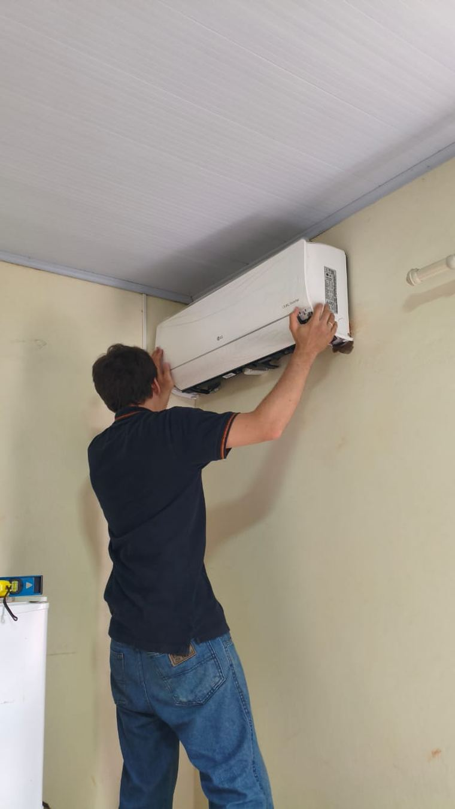

Equipe especializada
Instalação e manutenção com padrão profissional
Conforto, eficiência e qualidade para a sua casa ou empresa. Fale com a RaVic pelo WhatsApp e receba um orçamento sem compromisso.
Equipe especializada
Instalação e manutenção com padrão profissional
Serviço com garantia
Mais segurança e confiança para você contratar
Atendimento rápido
Agilidade no retorno e no agendamento
Orçamento sem compromisso
Você decide com clareza
Quatro serviços para casas e empresas. Não sabe qual escolher? Descreva o problema pelo WhatsApp e a RaVic indica o caminho.
Para aparelho novo ou mudança de lugar, em casas, apartamentos e comércios, inclusive modelos split.
Para o aparelho render melhor e o ar do ambiente ficar mais limpo.
Revisões programadas para evitar falhas antes que apareçam, inclusive em aparelhos split.
Para aparelho que não gela, pinga, congela, faz barulho ou desliga sozinho.
Veja como é uma instalação de ar-condicionado split, do suporte ao acabamento.

Tudo começa pelo suporte bem fixado e pela tubulação de cobre com isolamento térmico.
Quero instalar o meu →
A unidade externa vai em suporte próprio, com a tubulação protegida e o cabeamento organizado.
Quero instalar o meu →
Instalação de ar-condicionado split de diferentes marcas, em residências e comércios.
Quero instalar o meu →
A unidade interna fica firme na parede, nivelada e posicionada para distribuir bem o ar no ambiente.
Quero instalar o meu →
Aparelho alinhado, parede preservada e instalação organizada, pronta para usar.
Quero instalar o meu →Conte o que você precisa e receba um orçamento sem compromisso.
Quero meu orçamento agoraCada sintoma pode ter mais de uma causa. O aparelho é avaliado antes de qualquer troca de peça ou recarga de gás.
Filtro sujo, falha elétrica ou problema no sistema reduzem o desempenho. Nem sempre é falta de gás.
Pode ser dreno obstruído, sujeira ou falha na instalação. É preciso verificar a origem.
Gelo no aparelho indica funcionamento anormal. Desligue e peça uma avaliação.
Ruído diferente do normal pode indicar folga, vibração ou falha em componentes.
Filtros e partes internas acumulam sujeira e pedem limpeza ou higienização.
Se o ambiente leva tempo demais para esfriar, a avaliação mostra a causa certa.
Não deixe o problema piorar. Descreva o que está acontecendo.
Resolver meu ar-condicionado agoraMesmo limpo por fora, o aparelho pode acumular poeira, fungos e outras partículas por dentro. Veja nas fotos como isso acontece.

Poeira, fiapos e partículas ficam presos no filtro. Com ele saturado, o ar que passa já não sai tão limpo.
Quero higienizar o meu →
O ar do ambiente passa pelo filtro o dia todo. Quanto mais sujeira acumulada, mais partículas podem voltar para o ambiente.
Quero higienizar o meu →
Na serpentina e nas partes internas, a sujeira só aparece com o aparelho aberto. Sujeira e umidade favorecem mofo e mau cheiro.
Quero higienizar o meu →
Partes internas e dreno só são limpos de verdade com o aparelho desmontado. Passar pano por fora não resolve.
Quero higienizar o meu →
Higienização e manutenção feitas por um profissional ajudam o aparelho a funcionar bem e o ambiente a ficar mais confortável.
Quero higienizar o meu →Poeira e partículas no ar podem piorar crises em pessoas sensíveis.
Olhos, nariz e garganta podem ficar mais irritados em ambientes com muita poeira no ar.
Sujeira acumulada e umidade favorecem odor no ambiente.
Aparelho sujo pode gelar menos e trabalhar mais para esfriar.
Respire um ar mais limpo em casa ou na empresa.
Quero higienizar meu ar-condicionadoUm processo simples, sem burocracia.
Conte o que está acontecendo e informe a marca e o bairro. Fotos ajudam.
A RaVic indica o serviço adequado e apresenta a proposta.
Aprovado o orçamento, combinamos o melhor horário.
O serviço é executado e o aparelho é testado ao final.
O primeiro passo é um toque no WhatsApp.
Dar o primeiro passo agoraA RaVic Climatização faz instalação, higienização, manutenção e conserto de ar-condicionado para residências, comércios e empresas em Patos de Minas e região.
O foco é um atendimento profissional e próximo: entender a sua necessidade, indicar a solução certa e executar cada serviço com cuidado.
Organização e respeito ao seu ambiente.
Sem compromisso e sem surpresas.
Atenção aos detalhes de cada serviço.
Contato direto pelo WhatsApp.
Fale direto com quem cuida do seu equipamento.
Falar com a equipe da RaVicTécnico de ar-condicionado perto de você: atendimento presencial para ambientes residenciais e comerciais em Patos de Minas e região. Informe sua cidade ou bairro pelo WhatsApp para confirmar a disponibilidade.
Casas, apartamentos e outros ambientes onde você quer mais conforto no dia a dia: quartos, salas e escritórios em casa.
Lojas, escritórios e estabelecimentos que precisam de um ambiente climatizado funcionando bem, com manutenção para evitar paradas.
Informe seu bairro ou cidade e confirme o atendimento.
Confirmar atendimento na minha regiãoRespostas gerais. Para o seu caso específico, chame no WhatsApp.
O valor depende do modelo, da capacidade e do estado do aparelho, então cada serviço é orçado caso a caso. Envie as informações pelo WhatsApp e receba o orçamento, sem compromisso.
Conte qual serviço precisa ou o que está acontecendo, a marca e a capacidade (BTUs) do aparelho, se souber, e o seu bairro ou cidade. Fotos ajudam. É só mandar tudo pelo WhatsApp.
A limpeza remove a sujeira de filtros e partes acessíveis. A higienização é mais profunda e costuma ser indicada para mau cheiro, mofo e sujeira acumulada.
Você pode lavar os filtros com água e sabão neutro, seguindo o manual do aparelho. Já a higienização das partes internas, como serpentina e dreno, deve ser feita por um técnico, com o aparelho desmontado.
Depende do uso, da poeira, de animais no ambiente e do estado do aparelho. Sujeira visível, mau cheiro e queda no fluxo de ar são sinais de que está na hora.
Nem sempre. Filtro sujo, falha elétrica ou problema no ventilador também reduzem a refrigeração. O aparelho deve ser avaliado antes de qualquer recarga de gás.
Gotejamento pode vir de dreno obstruído, sujeira ou instalação. Gelo indica circulação de ar inadequada ou outra falha. Nos dois casos, vale uma avaliação técnica.
Pode ser algo simples, como o timer programado no controle, ou sinal de sujeira, superaquecimento ou falha elétrica. Se continuar acontecendo, vale uma avaliação técnica.
Sim. Atende clientes residenciais e comerciais, com instalação, manutenção, conserto e limpeza de ar-condicionado, inclusive split.
A RaVic atende Patos de Minas e região. Chame no WhatsApp, informe sua cidade ou bairro e confirme o atendimento.
Ficou com alguma dúvida? Tire agora com um técnico.
Tirar minha dúvida no WhatsAppFale com a RaVic agora e peça seu orçamento sem compromisso.
Clique no botão abaixo e envie uma mensagem direto para o WhatsApp da RaVic. Conte o que você precisa e receba o seu orçamento sem compromisso.
Agendar visita técnica